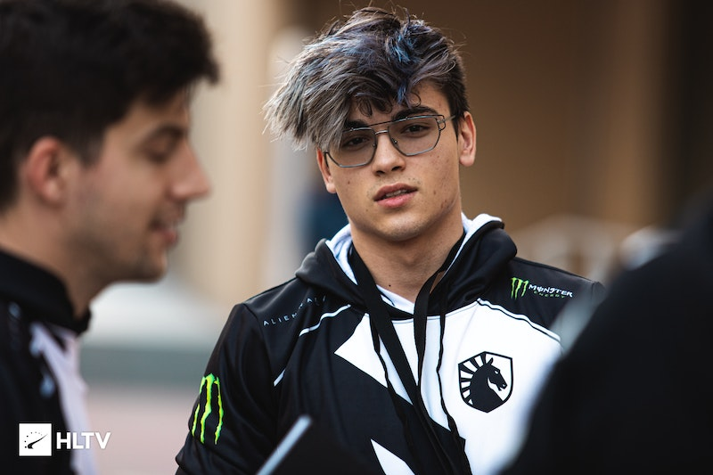

Russel "Twistzz" Van Dulken (born November 14, 1999) is a Canadian professional Counter-Strike: Global Offensive player for FaZe Clan. He is the most accomplished North American player, having won the second Intel Grand Slam with Team Liquid in 2019, and the PGL Major in Antwerp with FaZe Clan in 2022, among other S-Tier trophies. Van Dulken resides in Germany since his move to FaZe in January 2021.
